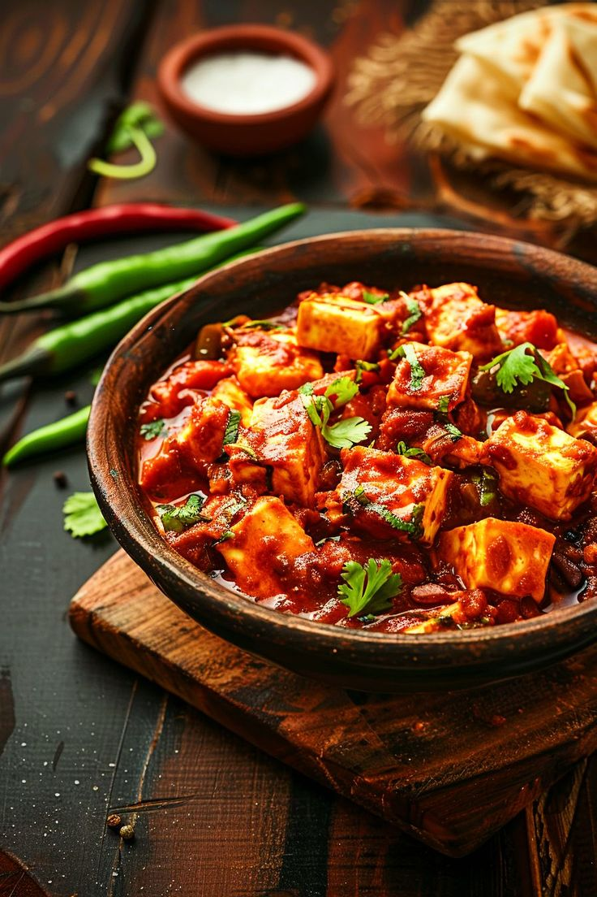
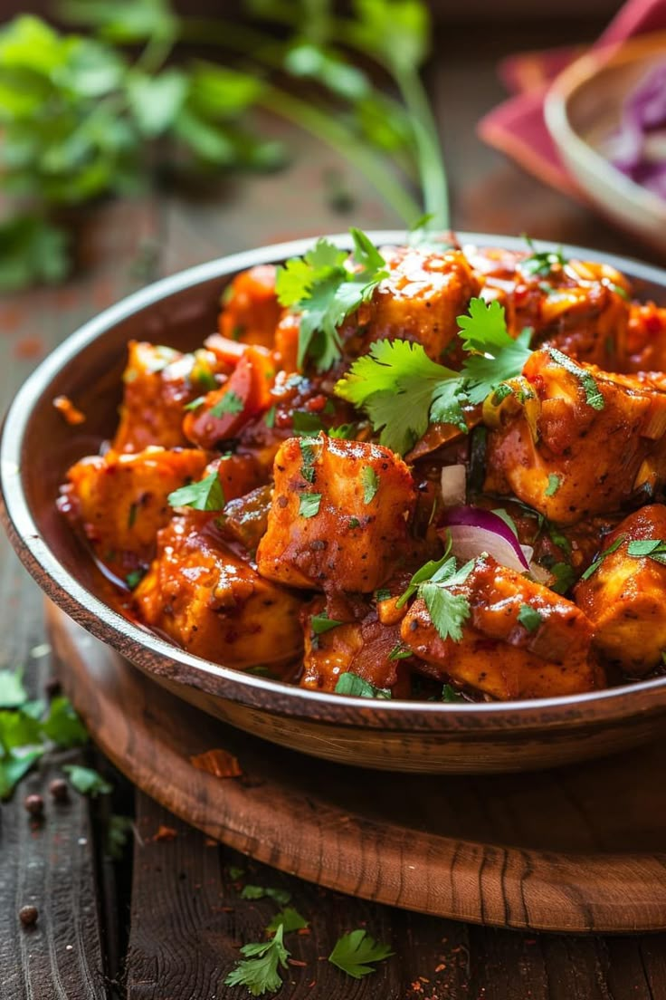

INGREDIENTS
For Gravy:
- 200g paneer (cubed)
- 2 tbsp oil or butter
- 1 onion (finely chopped)
- 2 tomatoes (pureed)
- 1 tsp ginger-garlic paste
- 6-8 cashews (soaked and blended into a paste) (optional for creaminess)
- 1/2 tsp turmeric powder
- 1 tsp red chili powder
- 1/2 tsp coriander powder
- 1/2 tsp garam masala
- 1/2 cup water
- Salt to taste
For Garnishing:
- 1 tbsp fresh cream (optional)
https://github.com/SarwarEdunetGithub/Q_frontend_Admin.git
- Fresh coriander leaves (chopped)
Recipe

- Sauté the Onions:
- -Heat oil or butter in a pan.
- -Add chopped onions and sauté until golden brown.
- -Add ginger-garlic paste and cook for 1-2 minutes until the raw smell disappears.
- Prepare the Gravy:
- -Add tomato puree and cook for 5-7 minutes until the oil starts separating.
- -Stir in cashew paste, turmeric, red chili powder, coriander powder, garam masala, and salt.
- -Add water and simmer for 5 minutes to let the flavors blend.
- Cook the Paneer:
- -Cook the Paneer
- -Stir in cream or milk for a rich texture. Simmer for 5 minutes on low heat.
- Serve:
- -Garnish with fresh cream and coriander leaves.
- -Serve hot with naan, roti, or basmati rice.
- Pro Tips:
- -✔ For a smoother gravy, blend the onion-tomato mixture before adding paneer.
- -✔ For a smoky flavor, roast the paneer before adding it to the curry.
- -✔ Adjust spice levels by reducing or increasing red chili powder.